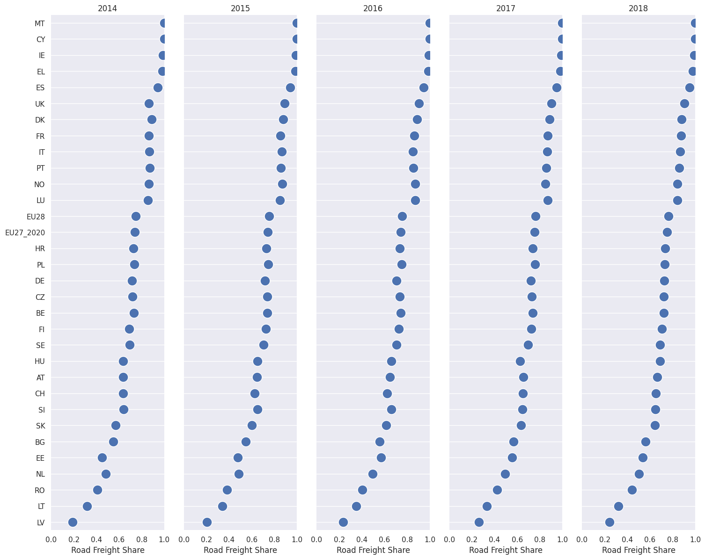

Modal Split in Transportation
Contents
16. Modal Split in Transportation#
import pandas as pd
17. Load Data#
DATA_REMOTE = "https://raw.githubusercontent.com/datumorphism/dataset-eurostats-freight-modal-split/master/dataset/eurostats_freight_modal_split.csv"
df = pd.read_csv(DATA_REMOTE)
df.head()
| transport_mode | country | year | value | is_estimated | not_applicable | |
|---|---|---|---|---|---|---|
| 0 | inland_waterways | AT | 2005 | 0.033 | False | False |
| 1 | inland_waterways | BE | 2005 | 0.135 | False | False |
| 2 | inland_waterways | BG | 2005 | 0.300 | True | False |
| 3 | inland_waterways | CH | 2005 | 0.001 | True | False |
| 4 | inland_waterways | CY | 2005 | NaN | False | True |
df.country.unique()
array(['AT', 'BE', 'BG', 'CH', 'CY', 'CZ', 'DE', 'DK', 'EE', 'EL', 'ES',
'EU27_2020', 'EU28', 'FI', 'FR', 'HR', 'HU', 'IE', 'IT', 'LT',
'LU', 'LV', 'MT', 'NL', 'NO', 'PL', 'PT', 'RO', 'SE', 'SI', 'SK',
'UK'], dtype=object)
18. Visualizations#
import matplotlib.pyplot as plt
import seaborn as sns;sns.set()
18.1. Visualize Time Series#
df_road = df.loc[df.transport_mode == 'road']
df_road.sort_values(by=["country", "year", "value"], inplace=True)
/tmp/ipykernel_2652/618637640.py:2: SettingWithCopyWarning:
A value is trying to be set on a copy of a slice from a DataFrame
See the caveats in the documentation: https://pandas.pydata.org/pandas-docs/stable/user_guide/indexing.html#returning-a-view-versus-a-copy
df_road.sort_values(by=["country", "year", "value"], inplace=True)
fig, ax = plt.subplots(figsize=(10,6.18))
g = sns.lineplot(
x="year",
y="value",
data=df_road,
hue='country',
palette="tab10",
linewidth=2.5,
markers='+',
ax=ax
)
g.legend(loc='lower center', bbox_to_anchor=(0.5, -0.4),ncol=7)
ax.set_ylim([0,1])
ax.set_ylabel('percentage of the total freight in tonne-kilometers')
Text(0, 0.5, 'percentage of the total freight in tonne-kilometers')
df_road_eu28 = df_road.loc[df_road.country == "EU28"]
fig, ax = plt.subplots(figsize=(10,6.18))
sns.lineplot(
x="year",
y="value",
data=df_road_eu28,
ax=ax,
palette="tab10"
)
ax.set_ylim([0,1])
/tmp/ipykernel_2652/2033319731.py:3: UserWarning: Ignoring `palette` because no `hue` variable has been assigned.
sns.lineplot(
(0.0, 1.0)
18.2. Modal Split#
df.columns
Index(['transport_mode', 'country', 'year', 'value', 'is_estimated',
'not_applicable'],
dtype='object')
df_year_2018 = df.loc[df.year == 2018]
df_year_2018.sort_values(by=["country", "transport_mode", "value"], inplace=True)
/tmp/ipykernel_2652/244472121.py:2: SettingWithCopyWarning:
A value is trying to be set on a copy of a slice from a DataFrame
See the caveats in the documentation: https://pandas.pydata.org/pandas-docs/stable/user_guide/indexing.html#returning-a-view-versus-a-copy
df_year_2018.sort_values(by=["country", "transport_mode", "value"], inplace=True)
df_year_2018.head()
| transport_mode | country | year | value | is_estimated | not_applicable | |
|---|---|---|---|---|---|---|
| 1664 | inland_waterways | AT | 2018 | 0.021 | False | False |
| 1696 | rail | AT | 2018 | 0.315 | False | False |
| 1728 | rail_inland_waterways_sum_of_available | AT | 2018 | 0.337 | False | False |
| 1760 | road | AT | 2018 | 0.663 | False | False |
| 1665 | inland_waterways | BE | 2018 | 0.161 | True | False |
19. Visualize the Ranks of the countries#
df_road_pivot = df_road.pivot(index='country', columns='year')['value']
df_road_pivot = df_road_pivot.reset_index()
df_road_pivot.head()
| year | country | 2005 | 2006 | 2007 | 2008 | 2009 | 2010 | 2011 | 2012 | 2013 | 2014 | 2015 | 2016 | 2017 | 2018 |
|---|---|---|---|---|---|---|---|---|---|---|---|---|---|---|---|
| 0 | AT | 0.610 | 0.608 | 0.617 | 0.628 | 0.643 | 0.630 | 0.635 | 0.637 | 0.640 | 0.634 | 0.647 | 0.649 | 0.654 | 0.663 |
| 1 | BE | 0.737 | 0.733 | 0.729 | 0.728 | 0.767 | 0.734 | 0.730 | 0.722 | 0.731 | 0.730 | 0.736 | 0.743 | 0.736 | 0.721 |
| 2 | BG | 0.476 | 0.474 | 0.461 | 0.451 | 0.505 | 0.494 | 0.561 | 0.529 | 0.560 | 0.549 | 0.547 | 0.556 | 0.566 | 0.562 |
| 3 | CH | 0.663 | 0.650 | 0.648 | 0.644 | 0.663 | 0.660 | 0.647 | 0.652 | 0.637 | 0.637 | 0.625 | 0.624 | 0.651 | 0.652 |
| 4 | CY | 1.000 | 1.000 | 1.000 | 1.000 | 1.000 | 1.000 | 1.000 | 1.000 | 1.000 | 1.000 | 1.000 | 1.000 | 1.000 | 1.000 |
df_road_vis = df_road_pivot[["country",2014,2015,2016,2017,2018]]
# Make the PairGrid
g = sns.PairGrid(
df_road_vis.sort_values(2018, ascending=False),
x_vars=df_road_vis.columns[1:], y_vars=["country"],
height=12, aspect=.25
)
# Draw a dot plot using the stripplot function
g.map(
sns.stripplot, size=15, orient="h",
palette="ch:s=1,r=-.1,h=1_r", linewidth=1, edgecolor="w"
)
# Use the same x axis limits on all columns and add better labels
g.set(xlim=(0, 1), xlabel="Road Freight Share", ylabel="")
# Use semantically meaningful titles for the columns
titles = df_road_vis.columns[1:].tolist()
for ax, title in zip(g.axes.flat, titles):
# Set a different title for each axes
ax.set(title=title)
# Make the grid horizontal instead of vertical
ax.xaxis.grid(False)
ax.yaxis.grid(True)
sns.despine(left=True, bottom=True)

fig, ax=plt.subplots(figsize=(6.18, 10))
df_road_vis_2 = df_road.loc[df.year>=2014]
df_road_vis_2.sort_values("value", ascending=False)
g = sns.stripplot(
y="country", x="value", hue="year", data=df_road_vis_2, ax=ax, orient="h",
palette="Set2", size=10, marker="o",
edgecolor="w", alpha=.5, linewidth=1,
order=df_road_vis_2.loc[df_road_vis_2.year==2018].sort_values("value", ascending=False).country.unique()
)
g.legend(loc='lower center', bbox_to_anchor=(0.5, -0.15),ncol=7)
ax.set_xlabel('Road Freight Share')
ax.set_ylabel('Countries')
Text(0, 0.5, 'Countries')